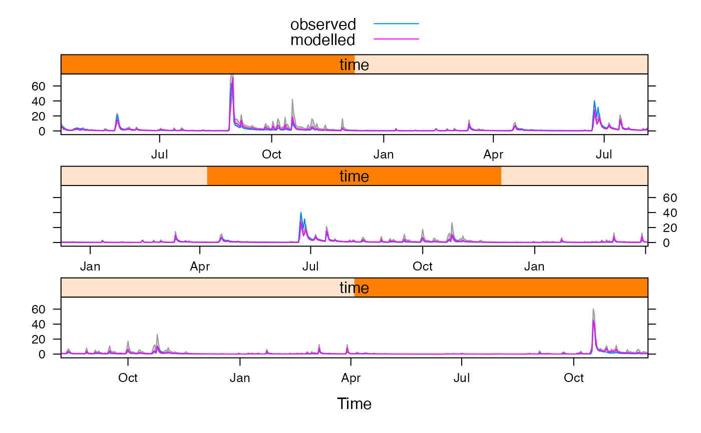
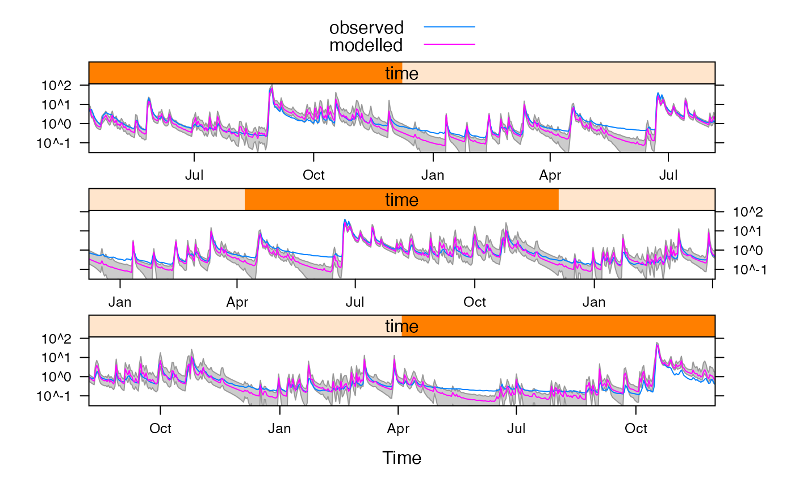
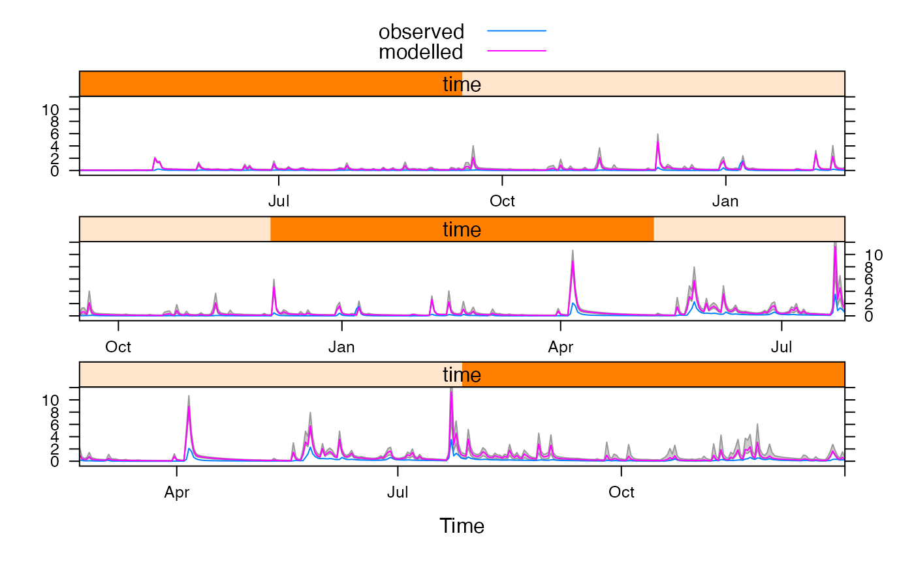

R/defineFeasibleSet.R
defineFeasibleSet.RdExtract the feasible (or behavioural) parameter sets meeting some criteria. These could be used as a feasible set or to estimate prediction quantiles according to the GLUE (Generalised Likelihood Uncertainty Estimation) method.
defineFeasibleSet(x, ...)
# S3 method for hydromad
defineFeasibleSet(x, ..., thin = NA)
# S3 method for default
defineFeasibleSet(
x,
model,
objseq = rep(1, NROW(x)),
frac.within = 0,
within.rel = 0.01,
within.abs = 0.1,
groups = NULL,
FUN = sum,
target.coverage = 1,
threshold = -Inf,
glue.quantiles = c(0, 1),
...
)in the hydromad method this is a hydromad
model object which has been run through either fitBySampling
or fitByDream to generate a large number of random parameter
sets with associated objective function scores. In the default
method, the first argument (x) is a matrix of parameter values
corresponding to the objective function values objseq.
extra arguments to the hydromad method are passed on to
the default method. Extra arguments to the default method will
result in an error.
interval between samples for results from DREAM. As it is a
Markov Chain Monte Carlo method, the sequences should be thinned first to
remove autocorrelation and achieve an efficient sample of the parameter
distributions. The default thinning interval NA uses the empirical
autocorrelation. See window.mcmc.
the hydromad model object to be used to run simulations.
Does not apply to the hydromad method.
objective function values corresponding to the parameter sets
x. This does not apply to the hydromad method, where it is
assumed that the objective function values have already been calculated.
Note that objseq can be omitted if not using the
target.coverage or threshold arguments (i.e. if just defining
an error criterion with frac.within, within.rel, within.abs), so the
original simulation run is not necessary.
model simulations are only retained
in the feasible set if some fraction frac.within of the simulated
values are within a fraction within.rel of the observed values OR
within an absolute difference of within.abs (typically mm/day).
groups is an optional grouping variable, of the
same length as the observed data in model, used to aggregate the
observed and fitted time series. The function FUN is applied to each
group. In this case, the error criteria frac.within, within.rel,
within.abs are evaluated on the aggregated values, not the raw time series.
Also target.coverage applies to the aggregated values. Typically
groups would be generated by cut.Date (for regular time
periods) or eventseq (for events). Note that the
feasible.bounds (e.g. for plotting) in this case will be an
aggregated time series, it will not correspond to the original time index.
Use update or predict to generate bounds on the original time
index.
fraction of the observed values to be contained
within the overall ranges of simulated values (minimum and maximum on each
time step) from the feasible set of parameters. Note, this does not refer to
the glue.quantiles values, but to the overall maximum and minimum.
The simulated values can be within the tolerance limit of observed values
given by within.abs to count as coverage.
value of the objective function (the objective function
used to generate objseq) used to define the feasible set: all
parameter sets above this threshold value will be kept. Also this
threshold value is subtracted from the objective function values to
calculate weights when glue.quantiles is given. If left as
-Inf, it will be set to the minimum objective function value in the
final feasible set.
if specified, these GLUE quantiles of the ensemble
simulations will be calculated and stored. They can be extracted with
fitted and shown in xyplot. The quantiles are calcualted using
the wtd.quantile function, and weighted according to
objseq - threshold. If glue.quantiles is left as
c(0,1) then the overall minimum and maximum simulated values are
taken on each time step, which is faster.
a modified version of model, with added elements
feasible.set, feasible.scores, feasible.fitted,
glue.quantiles and feasible.threshold. Can be passed to
xyplot, fitted, predict, update, coef,
and print.
predict.hydromad, update.hydromad,
fitBySampling, fitByDream
data(Queanbeyan)
ts74 <- window(Queanbeyan, start = "1974-01-01", end = "1976-12-01")
mod <- hydromad(ts74, routing = "expuh", rfit = list("inverse", order = c(2, 1)))
mod <- update(mod,
sma = "cwi",
tw = c(0, 100), f = c(0, 8), loss = c(-0.1, 0.1)
)
## Calculate the set of simulations within 15% error (or 1 mm/day) 90% of time.
## In this case we do not need to calculate objective function values
## beforehand. For GLUE quantiles, however, need to give 'objective'.
psets <- parameterSets(coef(mod), samples = 300)
#> Warning: parameters not fully specified, returning list
feas <- defineFeasibleSet(psets,
model = mod,
frac.within = 0.9, within.rel = 0.15, within.abs = 1
)
## How many of the 300 possible parameter sets were retained?
nrow(coef(feas, feasible.set = TRUE))
#> [1] 111
## View ranges of parameters in feasible set
feas
#>
#> Hydromad model with "cwi" SMA and "expuh" routing:
#> Start = 1974-01-01, End = 1976-12-01
#>
#> SMA Parameters:
#> lower upper
#> tw 0 100
#> f 0 8
#> scale NA NA
#> l 0 0 (==)
#> p 1 1 (==)
#> t_ref 20 20 (==)
#> Routing Parameters:
#> lower upper
#> tau_s 13.0292 13.0292 (==)
#> tau_q 0.5728 0.5728 (==)
#> v_s 0.4433 0.4433 (==)
#> v_q 0.5567 0.5567 (==)
#> delay 1.0000 1.0000 (==)
#> loss -0.1000 0.1000
#> Feasible parameter set:
#> tw f scale l p t_ref tau_s tau_q v_s v_q delay loss
#> lower 0.00 0 NA 0 1 20 13.03 0.5728 0.4433 0.5567 1 -0.09933
#> upper 97.66 8 NA 0 1 20 13.03 0.5728 0.4433 0.5567 1 0.10000
#>
#> Routing fit info: list(TRUE, 2)
## Plot simulation bounds
xyplot(feas, feasible.bounds = TRUE, cut = 3)
## Generate set of simulations with NSE > 0.5, for GLUE.
## First, need to calculate objective function values:
fit <- fitBySampling(mod, samples = 300, objective = hmadstat("r.squared"))
## Calculate 5 percent and 95 percent GLUE quantiles (i.e. weighted).
fitglu <- defineFeasibleSet(fit,
threshold = 0.5,
glue.quantiles = c(0.05, 0.95)
)
## Coverage of the GLUE quantile simulations (within 0.1 mm/day)
sim <- fitted(fitglu, feasible.bounds = TRUE)
head(sim)
#> GLUE.5 GLUE.95
#> 1974-04-11 4.9134569 15.603560
#> 1974-04-12 3.9902576 12.379516
#> 1974-04-13 1.8160592 5.819653
#> 1974-04-14 1.7512514 5.715896
#> 1974-04-15 1.0651009 3.628814
#> 1974-04-16 0.7150688 2.528074
mean((sim[, 1] < observed(fitglu) + 0.1) &
(sim[, 2] > observed(fitglu) - 0.1))
#> [1] 0.8964803
## Or - keep adding parameter sets until we reach a target coverage:
## Calculate 5 percent and 95 percent GLUE quantiles (i.e. weighted).
fitglu <- defineFeasibleSet(fit,
target.coverage = 0.9,
glue.quantiles = c(0.05, 0.95)
)
## Coverage of the GLUE quantile simulations (within 0.1 mm/day)
## (not to be confused with the target.coverage to define overall feasible set)
sim <- fitted(fitglu, feasible.bounds = TRUE)
mean((sim[, 1] < observed(fitglu) + 0.1) &
(sim[, 2] > observed(fitglu) - 0.1))
#> [1] 0.800207
## Plot simulated GLUE quantiles
xyplot(fitglu, feasible.bounds = TRUE, cut = 3)

xyplot(fitglu,
feasible.bounds = TRUE, cut = 3,
scales = list(y = list(log = TRUE))
)

## Summarise size of the simulation bounds: lower as fraction of upper
summary(coredata(sim[, 1] / sim[, 2]))
#> Min. 1st Qu. Median Mean 3rd Qu. Max.
#> 0.0000 0.1608 0.2364 0.2600 0.3643 0.8062
## Simulate on a new data period
newglu <- update(fitglu,
newdata = window(Queanbeyan,
start = "1980-01-01", end = "1982-01-01"
),
glue.quantiles = c(0.05, 0.95)
)
## The new period is very dry, all model simulations overestimate flow.
xyplot(newglu, feasible.bounds = TRUE, cut = 3)

## Coverage of the GLUE quantile simulations (within 0.1 mm/day)
sim <- fitted(newglu, feasible.bounds = TRUE)
mean((sim[, 1] < observed(newglu) + 0.1) &
(sim[, 2] > observed(newglu) - 0.1))
#> [1] 0.6977848